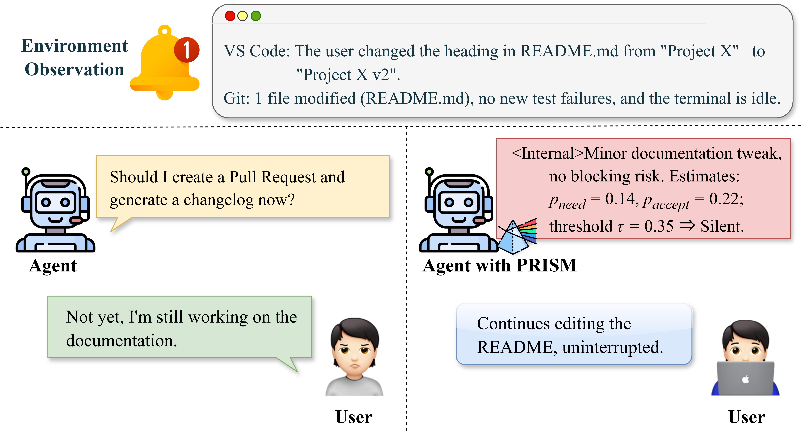
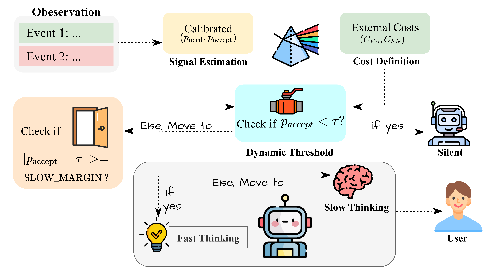
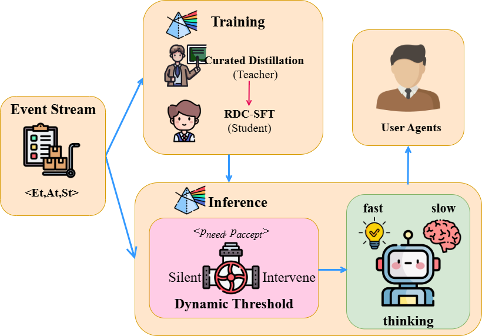
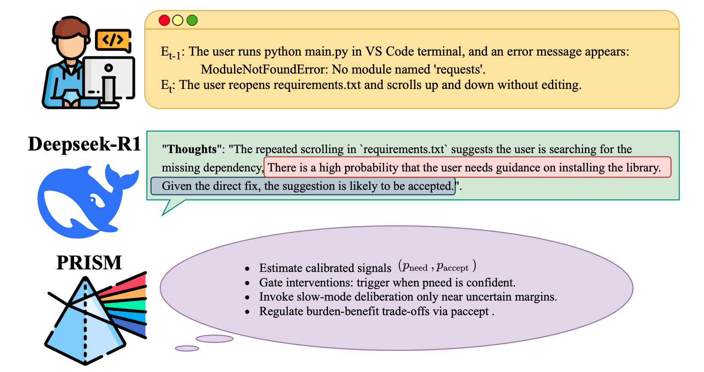

PRISM: Festina Lente Proactivity——
Risk-Sensitive, Uncertainty-Aware Deliberation for Proactive Agents
Abstract
Proactive agents must decide not only what to say but also whether and when to intervene. Many current systems rely on brittle heuristics or indiscriminate long reasoning, which offers little control over the benefit-burden tradeoff. We formulate the problem as cost-sensitive selective intervention and present PRISM, a novel framework that couples a decision-theoretic gate with a dual-process reasoning architecture. At inference time, the agent intervenes only when a calibrated probability of user acceptance exceeds a threshold derived from asymmetric costs of missed help and false alarms. Inspired by festina lente (Latin: “make haste slowly”), we gate by an acceptance-calibrated, cost-derived threshold and invoke a resource-intensive Slow mode with counterfactual checks only near the decision boundary, concentrating computation on ambiguous and high-stakes cases. Training uses gate-aligned, schema-locked distillation: a teacher running the full PRISM pipeline provides dense, executable supervision on unlabeled interaction traces, while the student learns a response policy that is explicitly decoupled from the intervention gate to enable tunable and auditable control. On ProactiveBench, PRISM reduces false alarms by 22.78% and improves F1 by 20.14% over strong baselines. These results show that principled decision-theoretic gating, paired with selective slow reasoning and aligned distillation, yields proactive agents that are precise, computationally efficient, and controllable. To ensure reproducibility, we will open-source code and models upon acceptance; all experiments use the open-source ProactiveBench benchmark.

First image description.

Second image description.

Third image description.

Fourth image description.
Poster
BibTeX
@article{YourPaperKey2024,
title={Your Paper Title Here},
author={Anonymous authors},
journal={Conference/Journal Name},
year={2026},
url={https://your-domain.com/your-project-page}
}